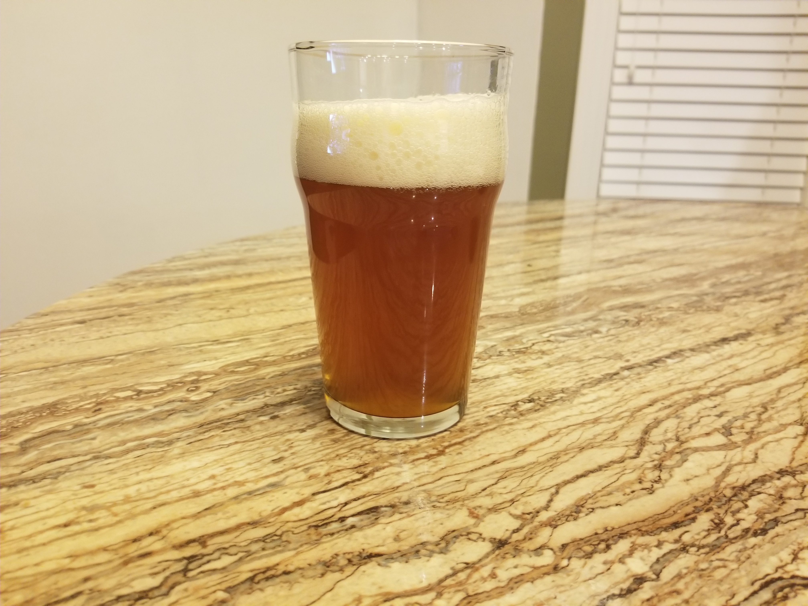

First brew at home. For Christmas last year my wife, Melanie, bought me a 5 gallon home brew gear kit, complete with the ingredients for a first brew at home: an American Pale Ale. Unfortunately, a busy few months at the beginning of the year lead to the kit being stored in the basement, unopened, until May when I finally had time to crack it open.
This was brewed before digging past chapter 1 in Palmer’s How to Brew, and we stuck to the procedures provided in the kit (oddly enough there were two separate procedures provided that were mostly similar..). After digging into How to Brew more there were definitely things to change in the process.
The Knight Rider APA is a full extract, partial boil brew and boiled conventionally. That is to say, we added all of the malt extract into water before boiling instead of performing a late extract. This probably darkened the beer a bit.
The actual yield we had for this was a little less than 40 bottles. Based on the kit size we were expecting a 5 gallon batch, but the procedure provided ends up with 3 to 4 gallons in the fermenter.
Note that the stats below have been calculated a few months after the actual brew. Additionally, the IBUs are a pretty rough estimate. The packaging did not include alpha acid details and the hops themselves were stored in a cool basement (but not a fridge) for ~5 months.
Knight Rider APA
General Information
| Batch Size | ~4.5 gallons |
| Batch Type | Full Extract, Partial Boil |
| Brew Number | 2 |
| Batch Number | 1 |
| Expected OG | 58 |
| Expected FG | 16 |
| IBU | SRM | OG | FG | ABV |
|---|---|---|---|---|
| 39 | 17 | 58 | 11 | 6.5% |
Ingredients
| Wort | |
| 1 lb | North American Crystal 15°L (steeped) |
| 7 lb | Ultra Light Malt Extract |
| Hops | |
| 1 oz | Magnum Pellet Hops (bittering) |
| 2 oz | Cascade Pellet Hops (aroma) |
| Other | |
| 1 tab | Whirlflocc (added at last 5 min) |
| Yeast | |
| 1 packet (11.5g) | Munton’s Dry Ale Yeast |
Hop Schedule
| Boil Time | Amount | Type |
|---|---|---|
| 60 min | 1 oz | Magnum |
| 10 min | 2 oz | Cascade |
Yeast Procedure
Simply tossed the dry yeast directly into the aerated wort.
Result
I’m no beer expert, I just try a lot of it, but I’ll try to describe this for anyone reading this.

Aroma
Fresh this had a mild hoppy and citrusy aroma with sweet, slightly syrupy, undertones. A month later the hoppiness has become more of a backdrop to the actual malt base.
Flavor
In the foreground this has a mild malt character with a little bread quality to it. Intermingled there is still a syrupy quality that is ocassionally overly sweet. Very low after taste; this finishes quickly leaving a coating on the cheeks that is slightly malty.
Fresh this beer also had some citrus notes overlayed the malt that reminded me of smelling an orange or grape fruit, but over just a month this flavor has mostly been obscured.
Things to Try Next
After brewing this first batch at home, and before bottling it, I dug into How to Brew quite a bit. In doing so I realized, “Wow, we could have done a lot better”. In fact, I was pretty worried the whole batch wasn’t going to turn out well for a few weeks. Turns out, the beer is pretty good. Is it my favorite pale ale? Definitely not, but it was still pretty easy to get through all the bottles.
Malt Extract Handling
The main thing I’d change process wise is switching to a Late Extract approach. At the very least we could expect to see the beer lighten up, and I think we may actually get some sweetness back out of it. The SRM on this was pretty dark for a pale ale, and definitely out of the BJCP guidelines. Late extract specifically was made to help deal with issues like this. In all subsequent partial boil brews I’m planning on using a late extract.
Hop and Yeast Storage
The next big thing I’d change for the future is just general hop and yeast storage. At the time I didn’t consider that storing hops and yeast in a cool room probably wasn’t sufficient - in fact I didn’t even look it up. This isn’t likely to be an issue in the future since I buy ingredients when I’m ready to use them, but for anyone else like me that has a kit in the basement - do yourself a favor and put your hops and yeast in the fridge.
Yeast Handling
The last thing I’d change is how we handled the yeast. The instructions on Munton’s site indicated that the yeast should be pitched directly into the wort, which seems totally at odds with advice from literally everyone else. At the time of writing this I’ve brewed at home 4 times, and in subsequent brews we’ve done as little as just rehydrating the yeast in sanitzed water to stirring it for 30 minutes (both per manufacturer’s guidelines). Eventually we’ll plan ahead enough to make yeast starters a day or two before a brew as well.
Beyond just the yeast handling, pitching rate needs to be addressed as well. I’m still working on this due to conflicting sources - manufacturers frequently list a yeast as ready for 5 gallons, but sources like Palmer’s How to Brew will suggest adding many billions more cells than is available in an off-the-shelf yeast packet. Again, to resolve this I’ll mostly be planning on working with yeast starters in the future.